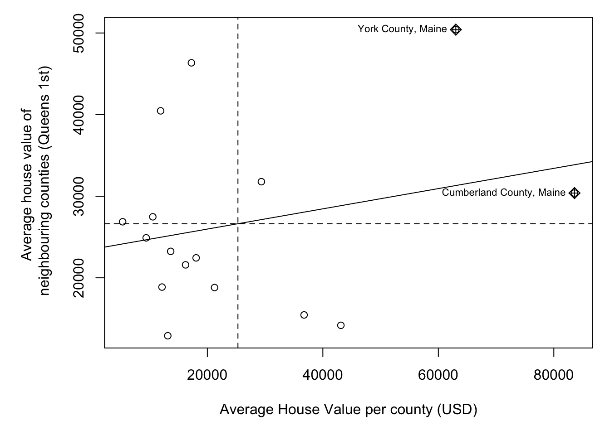
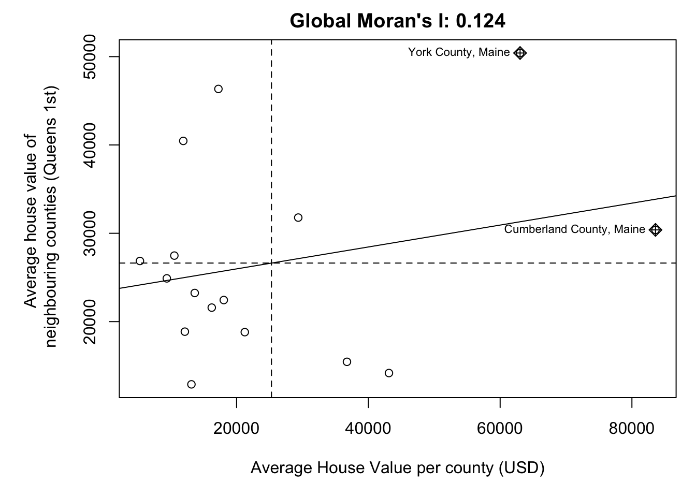

Here is how I load the example data for this tutorial which focuses on 2020 median per capita income for the state of Maine.
First make sure all of these libraries are at the top of your lab script in a code chunk, and run the code chunk! If you run the code chunk and it says a package is missing, either click “install” if the little yellow bar appears at the top, or go to the Packages tab, and click Install to go to the package ‘app store’.
library(readxl)
library(tidyverse)
library(dplyr)
library(terra)
library(sf)
library(tmap)
library(ggplot2)
library(ggthemes)
library(viridis)
library(RColorBrewer)
library(plotly)
library(spatstat)
library(sfdep)
library(tidycensus)
library(units)
library(sfdep)
library(spatstat)Then you can load your data from the census and tidy up, before plotting
# Download some data for Maine and NH using get_acs
# THIS WILL NOT WORK IF YOU DID'T RUN YOUR API KEY CODE & RESTART R-STUDIO
ACS_county.sf <- get_acs(geography = "county",
year = 2019,
variables = c(housevalue = "B25075_001", # house value
total_pop = "B05012_001", # total population
total_house = "B25001_001", # no. houses
med.income = "B19013_001"), # median income
state = c("ME"),
survey = "acs5", geometry = TRUE,
output = "wide", show_call = FALSE)
#st_coordinates(ACS_county.sf)
# OPTIONAL. For more advanced work, you probably want to keep the error columns
# If you don't run it, remember all your columns have an E on the end of the name
ACS_county.sf <- ACS_county.sf %>%
select(
GEOID,
NAME,
housevalue = housevalueE,
total_pop = total_popE,
total_house = total_houseE,
med.income = med.incomeE,
geometry
)
#st_coordinates(ACS_county.sf)
# Change the map projection to Albers equal projection,
# then remove empty polygons (lakes etc) and fix any broken geometry
ACS_county.sf <- ACS_county.sf %>%
st_transform(5070) %>%
filter(!st_is_empty(geometry)) %>%
st_make_valid()
# Find the areas in each county & change the units from metres squared to km squared
ACS_county.sf$Area <- st_area(ACS_county.sf)
ACS_county.sf$Area <- as.numeric(set_units(ACS_county.sf$Area,"km^2"))
# OPTIONAL & DEPENDS ON THE VARIABLES YOU DOWNLOAD
# Divide the total population & housing by the area to give the population/housing density
ACS_county.sf$pop_density_km2 <- ACS_county.sf$total_pop / ACS_county.sf$Area
ACS_county.sf$house_density_km2 <- ACS_county.sf$total_house / ACS_county.sf$Area
#SPATIAL WEIGHTS - I chose 1st order QUEENS
# First get the geometry/coords
# Then the central point in each polygon
# Finally, extract the Queens neigbours
# and get the spatial weights matrix
ACS_county.geometry <- st_geometry(ACS_county.sf)
ACS_county.centroid <- st_centroid(ACS_county.sf)
neighbor.queens <- st_contiguity(ACS_county.geometry, queen=TRUE)
weights.queens <- st_weights(neighbor.queens)Once we’ve defined a neighborhood for our analysis, we identify the neighbors for each polygon in our dataset then summaries the values for each neighborhood cluster (by computing their mean values, for example). This summarized neighborhood value is sometimes referred to as a spatially lagged value (Xlag).
Using R, it’s now very easy for us to calculate the Moran’s I scatterplot
The old spdep package has a very easy scatterplot function to make a moran’s plot. But unfortunately the new sfdep package has not yet followed suit. so here’s a work-around
## Loading required package: spData## To access larger datasets in this package, install the spDataLarge
## package with: `install.packages('spDataLarge',
## repos='https://nowosad.github.io/drat/', type='source')`##
## Attaching package: 'spData'## The following object is masked _by_ '.GlobalEnv':
##
## house## The following object is masked from 'package:openintro':
##
## house# calculate the sp version of weights
weights.queens.sp <- spdep::nb2listw(neighbor.queens)
# and plot , the first line adjusts the margins to make it neater.
par(mar=c(5,6,1,1))
moran.plot(ACS_county.sf$housevalue,
weights.queens.sp,
xlab = "Average House Value per county (USD)",
ylab = "Average house value of \n neighbouring counties (Queens 1st)",
labels=ACS_county.sf$NAME,
zero.policy = T)
We then plot HouseValuelag against HouseValue for each county. A positive slope means positive autocorrelation (smooth clusters, high values surrounded by high values). A negative slope means negative autocorrelation (high surrounded by low, chessboard effect).
The Moran’s I coefficient between HouseValuelag and HouseValue is nothing more than the slope of the least squares regression line that best fits the points after standardizing both variables (i.e., converting them to z-scores), which centers them on the mean and scales them by their standard deviation.
The global_moran function outputs the global Moran’s I along with the average number of neighbours.
MoranI_HouseValue <- global_moran(ACS_county.sf$housevalue,
nb = neighbor.queens,
wt = weights.queens)
MoranI_HouseValue## $I
## [1] 0.1241145
##
## $K
## [1] 4.586472In fact, lets add it as a title to the scatterplot.
# and plot , the first line adjusts the margins to make it neater.
par(mar=c(5,6,2,1))
moran.plot(ACS_county.sf$housevalue,
weights.queens.sp,
xlab = "Average House Value per county (USD)",
ylab = "Average house value of \n neighbouring counties (Queens 1st)",
labels=ACS_county.sf$NAME,
zero.policy = T,
main= paste("Global Moran's I:",round(MoranI_HouseValue$I,3)))
If there is no degree of association between HouseValue and HouseValuelag, the slope will be close to flat (resulting in a Moran’s I value near 0). In our working example, the slope is far from flat. So this raises the question: how significant is this Moran’s I value (i.e. is the computed slope significantly different from 0)? There are two approaches to estimating the significance: an analytical solution and a Monte Carlo solution.
The analytical solution makes some restrictive assumptions about the data and thus cannot always be reliable. The other approach (and the one favored here) is a Monte Carlo test. This approach avoids parametric assumptions about the data distribution or spatial layout, relying instead on the assumption that values are exchangeable under the null hypothesis.
In a Monte Carlo test (specifically, a permutation-based bootstrap test) we assess the significance of an observed Moran’s I statistic by comparing it to a distribution of values generated under the null hypothesis of spatial randomness. This is done by permuting the attribute values across spatial units while keeping the spatial structure (e.g., neighborhood relationships) fixed.
Here’s the quick code to do this.
global_moran_perm(ACS_county.sf$housevalue,
nb = neighbor.queens,
wt = weights.queens,
alternative="two.sided", #Should be one of "greater", "less", or "two.sided"
nsim= 1000) ##
## Monte-Carlo simulation of Moran I
##
## data: x
## weights: listw
## number of simulations + 1: 1001
##
## statistic = 0.12411, observed rank = 913, p-value = 0.1758
## alternative hypothesis: two.sided## [1] 4.766444So in this case,
Or mathematically
Then
We’re likely to see patterns with Moran’s I >= 0.124 almost 20% of the time. AKA nearly 1 in 5 random patterns are likely to have a Moran’s I value this extreme. (1/0.2098 = 4.766). This is a pretty high likelyhood of seeing a pattern like this. Normally we only trust results with p < 0.05, where a H0 would only happen by chance 1 time in 20.
So in this case, I don’t think we have enough evidence to reject H0. E.g. there’s no evidence the autocorrelation of housevalues is significant (p=0.2098)
We are going to interpret this in detail during class, or see here https://mgimond.github.io/Spatial/chp13_0.html#monte-carlo-approach-to-estimating-significance